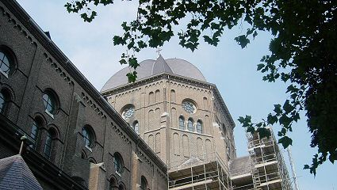
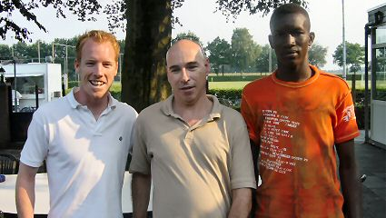
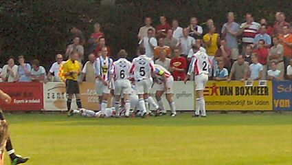

|
UDI'19 - Roda JC (1-5) 7 augustus 2004 |
UDI'19
- Roda JC (1-5) 7 augustus 2004

De eerste wedstrijd voor de Amstelcup voerde ons naar Uden.
Veel geel op het zonnige terras bij UDI.
No alcohol beyond this point.
De boarding wordt voorzien van leukere reclame.
Urinoir in Berlage-stijl.
Om 18.00 uur begint de wedstrijd. Roda speelt in het nieuwe
zwarte tenue.

Senden coacht bij een hoekschop van UDI.

Op dat moment komen de vriendelijke Lachambre en de schuchtere
Sekou binnenwandelen.
Eenmaal terug heeft Van Dessel al 0-1 gescoord.

Niet veel later kan UDI de gelijkmaker uitbundig vieren.
Het was gezellig druk.
Na de 1-3 ruststand loopt Roda snel uit naar 1-5. Hier een vrijetrap.
Een heel originele tattoo. Mooi schoentje ook!
De shirtjes van UDI leken op die van Willem II.
De spelers wilden weglopen maar werden door de supporters tot
de groetplicht geroepen.
Deze Rodarakkers versierden de aanpandige speeltuin. De meeste
Rodamensen gingen meteen naar huis. Na een paar bier en nog
wat frieten verlieten ook wij het Brabantse land.